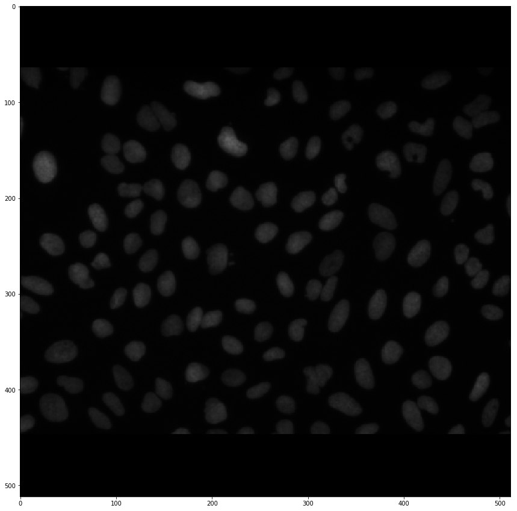
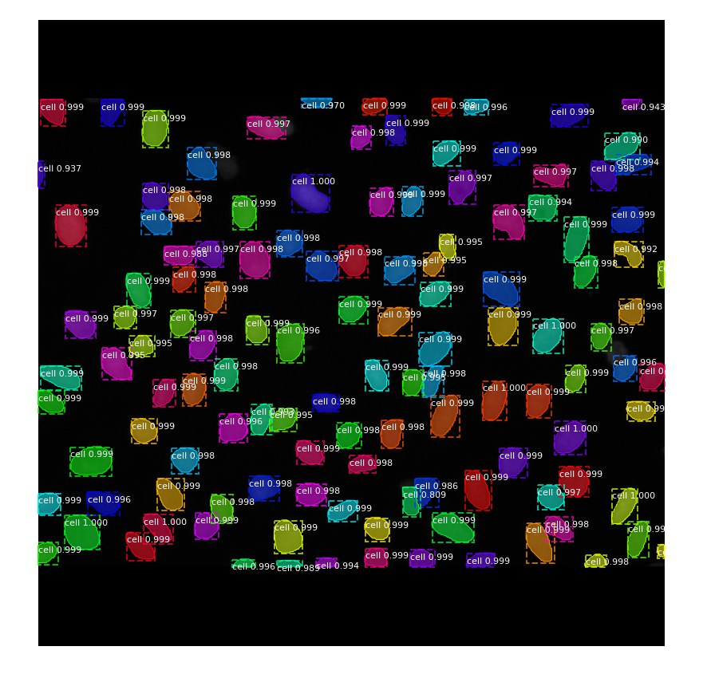

Increasing the efficiency and accuracy of laboratories
A Finnish research laboratory wanted to automate the calculating and segmenting of nuclei from microscope images because the scientists were using precious time calculating them by hand.
Tens of images were taken daily, which all needed to be calculated by doctors and labratory technicians when they could have spent that time doing other tasks to advance their research. Additionally, many images were hard to calculate precisely because of the sheer number of nuclei and how they would sometimes overlap.
One microscope image which needs to be calculated by hand.
We used tens of labelled images gathered by the laboratory and hundreds more images from a labelled data set online. For the artificial intelligence we repurposed and retrained a recently released state-of-the-art neural network.
The same microscope image after it has passed through the neural network. It also shows the probability of each nuclei being present.
Currently our model segments 85% of the nuclei correctly. These early results are very good and at least on par with human performance, but the research and development is ongoing and more results will be published soon.